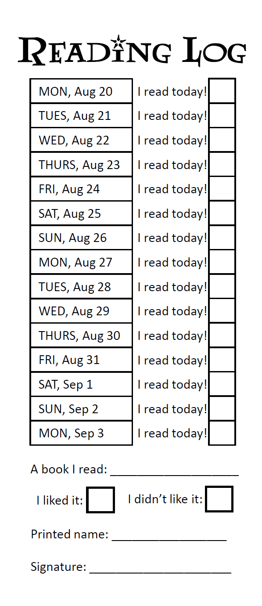

Reading Logs
At Renaissance, we expect students to read about 20 minutes a day. This will be important to prepare students for Book Report projects due about every six weeks.
I am giving students the option to select their own texts. I also have a list of suggested reading if they run out of ideas!
Every two weeks, students will turn in a reading log documenting their independent reading habits. I am not requiring them to keep track of their minutes, to write paragraphs summarizing their reading, or to get a signature from a parent. Instead, the reading log grade will be based 100% on completion rather than content. I hope that this will encourage students to be more honest and open about their reading habits.
I have included a sample “Reading Log” bookmark. They will all follow this format, and students will receive full credit for turning them in on time, regardless of how complete the form is.
I believe that solo reading at home is the single biggest indicator for success. Consistent reading will improve all aspects of a student’s education.